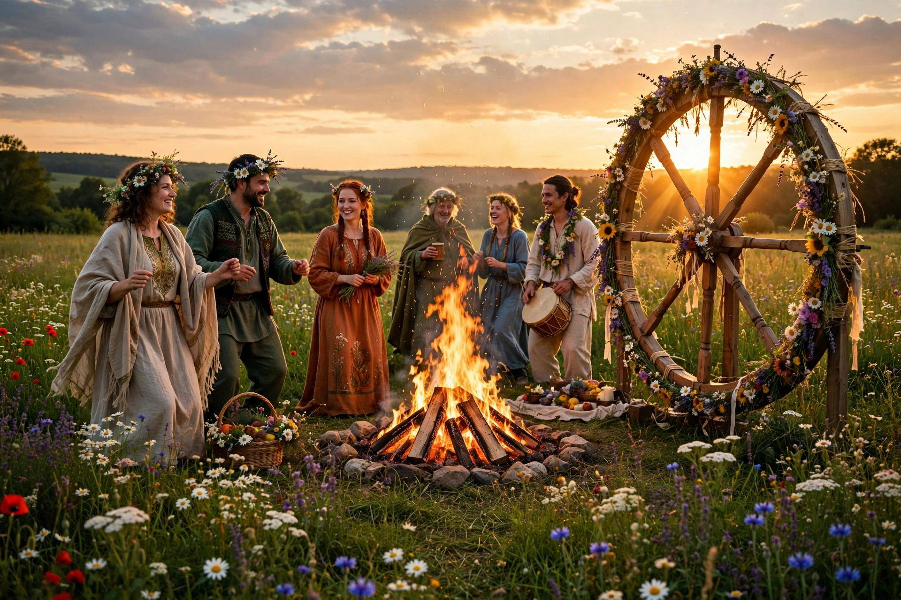

| Observed by | Wiccans, neopagans |
|---|---|
| Date | Summer solstice, c. 20–22 June (N. Hemisphere) |
Litha is a pagan festival and one of the eight Wiccan sabbats, celebrating midsummer and the summer solstice, the longest day of the year. The name derives from Bede's De temporum ratione, which gave the Old English months corresponding to June and July as Litha.
Celebrants mark the sun at its peak power with bonfires, outdoor rituals, feasting, and honouring nature and solar deities. In Wiccan theology the God reaches maximum strength, after which days shorten toward Lammas and the autumn equinox (Mabon). Traditions include gathering herbs believed potent at midsummer, fire leaping for luck, and all-night vigils at sacred sites such as Stonehenge.
Midsummer festivals are widespread in European folk tradition — including Scandinavian Midsummer and St John's Eve bonfires — though modern Litha as a named sabbat is a 20th-century Wiccan construction within the Wheel of the Year.